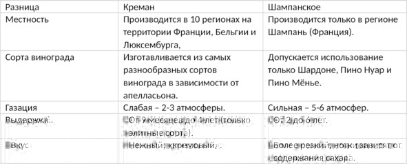
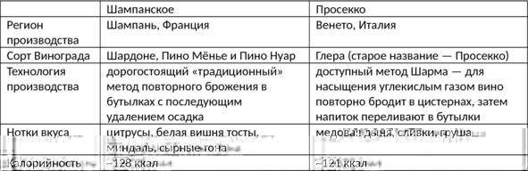

Понятие игристых вин
Игристое вино (англ. sparkling wine) – это вино, насыщенное углекислым газом, полученным в результате естественного брожения. Благодаря углекислому газу игристое вино шипучее, пенится и при открытии «выстреливает» пробкой. Большинство игристых вин белые или розовые, но есть и красные сорта.
Самым известным игристым вином в мире является французское шампанское (champagne). Однако в СССР под термином «шампанское» понимали любые игристые вина, в том числе и отечественные, что привело к неразберихе среди граждан и судебным искам со стороны Франции. Шампанское – название, контролируемое по географическому принципу, а это значит, что маркировать продукцию надписью «champagne» имеют право только производители из региона Шампань при соблюдении классической для этой местности технологии производства. По поводу кириллического написания «шампанское» споры идут до сих пор.
Игристые вина нельзя путать с искристыми (газированными) – изготовленными методом искусственного насыщения углекислым газом без брожения. Такие напитки имеют более слабое давление в бутылке (1—2,5 против 3—6 атмосфер). На этикетке искристых вин производитель обязан указывать, что вино является газированным.
Классическая технология производства игристого вина (на примере шампанского)
Даже нынешняя автоматизация технологических процессов не смогла существенно затронуть эту отрасль. До сих пор на большинстве элитных заводов используют ручной труд. В качестве примера рассмотрим классическую технологию производства шампанского.
Весь процесс состоит из следующих этапов:
1. Сбор урожая. Урожай собирают только ручным способом, что позволяет сразу удалить испорченные ягоды, дающие красный цвет. Виноград срывают с гроздьев немного раньше срока его полного созревания, когда кислотность выше нормы, а содержание сахара ниже.
Шампанское бывает только белого и розового цвета, но его делают из двух красных и одного белого сорта винограда. Дело в том, что красящие вещества находятся в кожице ягод, если выдавить сок, не повредив кожицу, можно получить абсолютно светлое игристое вино.
Для настоящего шампанского разрешено использовать только три сорта винограда: Шардоне, Пино Менье и Пино Нуар. Первый относится к белым сортам, два других – к красным. Самым часто используемым виноградом для шампанского является Пино Менье.
2. Выжимка сока. На данном этапе собранный виноград отжимают на специальных прессах. Ягоды разных сортов и с разных виноградников перерабатывают отдельно. Выделяют три вида сока:
– cuvee (кюве) – сок первой выжимки, считается самым качественным, так как почти не контактирует с кожицей винограда;
– первичное сусло – сок более низкого качества, получаемый после второй выжимки;
– вторичное сусло – результат третьей выжимки винограда, иногда качество вторичного сусла настолько низкое, что в дальнейшем оно не используется.
3. Брожение. Каждое сусло подвергают брожению в металлических чанах. Самые престижные марки шампанского бродят в специальных дубовых бочках, в которых проще контролировать температуру. В результате получается кислое сухое вино – основной материал для производства игристых вин.
4. Купажирование. В ходе данного этапа мастера смешивают вина разных сортов и лет выдержки, полученных из кюве, первичного и вторичного сусла. В результате напиток приобретает уникальный вкус, по которому каждую марку отличают от конкурентов. Иногда виноделы добавляют в один купаж до пятидесяти разных сортов вина. Элитные сорта шампанского не купажируют, их делают из лучшего виноградного сока одного года. Соответственно, стоимость такой бутылки намного выше.
5. Вторичное брожение. После купажирования вино разливают в специальные бутылки повышенной прочности. Далее добавляют сахар и дрожжи, вызывающие вторичное брожение. Бутылки плотно закрывают пробкой и перемещают в винный погреб, где они обязательно должны храниться в горизонтальном положении. Согласно действующим стандартам, в одну бутылку шампанского добавляют 18 г сахара и 0,3 г дрожжей.
6. Ремюаж (фр. remuage). После окончания брожения дрожжи выпадают в осадок, от которого нужно избавиться. Для этого бутылку постепенно опускают вниз горлышком, вращая ее вокруг своей оси. После нескольких дней манипуляций весь осадок перемещается к горлышку бутылки. На элитных винокурнях бутылки переворачивают вручную, в массовом производстве используют специальный аппарат с автоматическим управлением.
7. Выдержка. Вместе с осадком шампанское выдерживают от двух до шести лет в винных погребах, контролируя температуру и влажность. Специалисты считают, что качественный напиток должен созревать не меньше четырех лет.
8. Дегоржаж (фр. degorgeage, от gorge – горло). Позволяет избавиться от дрожжевого осадка возле пробки. Горлышко бутылки замораживают в солевом растворе при температуре -18 °С. Далее бутылку открывают, под напором газа ледяная пробка, содержащая осадок, вылетает. При этом часть шампанского теряется. Для компенсации потерь в бутылку заливают смесь из коньяка, вина и сахарного сиропа. Далее бутылку опять закрывают новой пробкой, которую закрепляют проволокой, называемой мюзле.
Впервые дегоржаж применили в 1800 году производители винодельческого дома Madame Clicquot. До этого дрожжевой осадок из бутылок вообще не удалялся, вследствие чего шампанское было мутным. Раньше дегоржаж делался вручную и требовал от виноделов немалого мастерства. Теперь этот процесс выполняется на специальном оборудовании при минимальном участии человека.
9. Предпродажная подготовка. Бутылку протирают, затем наклеивают этикетку с информацией о напитке и отправляют в продажу.
В производстве большинства дешевых игристых вин вместо брожения в бутылке (5—8 этапы, технология известна как «метод шампанизации») применяют более простой и дешевый в производстве метод Шармa, суть которого в том, что вино повторно бродит в больших цистернах из нержавеющей стали, затем напиток фильтруют, охлаждают и сразу разливают в бутылки. Впервые этот метод опробовал в 1895 году итальянец Федерико Мартинотти, а в 1910 года француз Эжен Шарма запатентовал специальное оборудование, поэтому саму технологию иногда называют методом Шарма-Мартинотти. Недостаток повторного брожения в цистернах – игристое вино теряет часть аромата и вкуса.
Сорта и виды шампанского
По количеству используемых в производстве сортов винограда шампанское можно разделить на винтажные и невинтажные виды.
Millesime champagne (винтажное или миллезимное шампанское) изготовляют только из винограда урожая одного года (миллезима) при условии, что этот год был удачным для виноделия (случается 2—3 раза на 10 лет). В каждом винодельческом регионе публикуется свой список удачных для выращивания винограда годов. Но в последние несколько лет большинство производителей перестали придерживаться этого правила, поскольку современные технологии позволяют отбраковать неподходящие ягоды, оставив только лучшие. Получается меньше вина, зато качественного. Это обесценило винтажные сорта шампанского.
Non millesime champagne (невинтажное шампанское) производят путем смешивания вин разных лет. В таких напитках обычно содержится 15—40% вина последних 2—3 лет (используется резервное вино среднего и низкого качества).
По содержанию сахара:
– Non-dosage, brut nature – производится без добавления сахара, так как считается, что он нивелирует вкус шампанского. Это самые дорогие сорта, для изготовления которых требуются лучшие винные материалы. Сахар в напитке остается за счет искусственной остановки брожения, после вторичной ферментации содержание сахара не превышает 6 г/л.
– Brut (брют) – самый распространенный вид шампанского с содержанием сахара не более 15 г/л (1,5%). Отлично подходит для любых блюд.
– Extra Sec (Extra Dry) – промежуточный вид, содержание сахара – 12—20 г/л. В настоящее время почти не производится из-за низкой популярности среди потребителей.
– Sec (Dry) – сухое (полусладкое) шампанское, содержит 17—35 г/л сахара.
– Demi-sec (Rich) – сладкие шампанские вина с содержанием сахара 33—50 г/л.
– Doux – десертные сорта, количество сахара в которых превышает 50 г/л.
По типу производителя:
– NM (Negociant manipulant) – для производства шампанского компания покупает виноград или виноматериалы. В эту группу попадают практически все крупные производители.
– RM (Recoltant-manipulant) – винный дом является владельцем виноградников и контролирует весь цикл производства шампанского вплоть до разлива по бутылкам.
– ND (Negociant distributeur) – компания продает шампанское под своей маркой, но не производит его.
– MA (Marque auxiliaire) – марка не принадлежит ни владельцу виноградника, ни производителю. Зачастую собственными брендами владеют рестораны и супермаркеты.
– SR (Societe de recoltants) – шампанское произведено ассоциацией виноградарей, контролирующих несколько марок.
– RC (Recoltant cooperateur) – член кооператива, продающий шампанские вина под собственной маркой.
Сорта шампанского:
– Cuvees de prestige (special или delux) – самые престижные напитки, которые производятся из винограда категории Grand Cru. Большинство шампанских вин этого сорта являются винтажными и выдерживаются дольше других.
– Blanc de blancs (белое из белых) – производится исключительно из белого винограда Шардоне.
– Blanc de noirs (белое из черных) – изготавливается только из красных сортов Пино Менье и Пино Нуар.
– Rose (розовое) – шампанское, получаемое путем смешивания красного и белого вина. Характерный розовый цвет напиток приобретает благодаря вымачиванию кожицы красного винограда в начальном сусле.
Краткая история игристых вин и шампанского
Игристые вина появились еще в античности: тогда никто не знал, как вино становится шипучим, насыщение напитка непонятными пузырьками приписывали фазам луны и даже проделкам богов. В Средние века игристые вина считались безнадежно испорченным продуктом, их даже называли «дьявольскими». Было от чего: природа пузырьков по-прежнему оставалась невыясненной, зато лопнувшая под воздействием возросшего внутреннего давления бутылка мало того что приносила владельцу убыток, так еще и порождала цепную реакцию, в результате которой могло пострадать до 90% всех запасов погреба. Если в момент «детонации» бутылок в погребе находились люди, они подвергались смертельной опасности. Работая в подвале, богатые виноделы и монахи надевали специальные доспехи наподобие рыцарских, чтобы защититься от осколков внезапно лопнувшей бутылки.
До изобретения мюзле – специальной проволочной уздечки для более надежной фиксации пробки – и прочного стекла (изготовленного в угольных, а не дровяных печах) такие происшествия были скорее правилом, чем исключением.
В 1662 году англичанин Кристофер Меррет прочитал доклад, в котором разъяснил, что вино начинает «играть» из-за сахара и подходящей температуры. После этого насыщение вина углекислым газом перестало быть делом случая, а процесс брожения и степень газации виноделы научились контролировать.
Как появилось шампанское
Сегодня в это сложно поверить, но шампанское не всегда было игристым: изначально так называлось кисловатое розовое вино из сорта Пино Нуар, которое делали преимущественно крестьяне. Появление шампанского связано с климатическими особенностями региона Шампань: из-за низких температур зимой брожение вина приостанавливалось, а весной после потепления возобновлялось, так и получалось вторичное брожение.
Документально зафиксировано, что уже в 1531 году во Франции было игристое вино (изготовленное «сельским методом» без добавления сахара). XVII век связан с именем Дома Периньона – монаха, который якобы изобрел шампанское. На самом деле в обязанности достопочтенного бенедиктинца входило как раз обратное: он должен был бороться с дьявольскими пузырьками, из-за которых монастырь терпел убытки. В том или ином виде французское игристое вино существовало задолго до рождения Дома Периньона. Впрочем, он действительно значительно улучшил виноделие региона: первым начал смешивать сок разных сортов винограда и разливать шампанское в бутылки, которые имели пробки из дубовой коры, что надежно удерживало углекислый газ.
Как бы то ни было, в XVIII веке странное, пощипывающее язык и кружащее голову вино вошло в моду, а в 1870-х виноделы со всего мира съезжались во Францию, чтобы научиться шампанизации.
Интересные факты о шампанском:
– одна бутылка шампанского содержит около 250 миллионов пузырьков;
– давление в стандартной бутылке составляет 6,3 кг на квадратный сантиметр (0,63 Мпа);
– пробка из открытой бутылки шампанского вылетает с начальной скоростью 60 км/ч;
– в год виноделы продают по всему миру около 329 млн бутылок шампанского.
История игристых вин в России
Российские виноделы не отставали от европейских и охотно учились у французов шампанизации, так что уже в 1799 году в Крыму увидела свет первая официальная партия отечественных игристых вин, хотя, судя по записям современников, «шипучие вина» в том регионе были известны еще в 1711 году. Историю российских «шампанских» также связывают с именем князя Голицына, внесшего немалый вклад в развитие этой области производства.
Однако сам бренд «Советское Шампанское» появился в 1936 году, когда уже более-менее улеглись послереволюционные страсти и был отменен «сухой закон». Со всей актуальностью встал вопрос: что пить простому пролетарию в конце рабочего дня, если он хочет культурно отдохнуть, и чем советские рабочие хуже западных?
Так в СССР появился на то время продвинутый и дешевый метод Шарма по системе Фролова-Багреева (затем улучшенный до метода «непрерывного потока»), позволяющий провернуть весь процесс шампанизации за три недели, а с ним – и доступное (хотя и не очень изысканное) игристое вино для трудящихся.
Марка «Советское Шампанское» не была закреплена за одним заводом и относилась ко всем игристым винам Союза: фактически из любого сорта винограда, сделанным любым методом.
В 1997 году правомерность имени была справедливо оспорена французскими виноделами, поэтому в наше время термин «советское шампанское» можно встретить только в кириллическом написании на винах для внутреннего употребления. Для международного рынка зарегистрирована марка «ТМ Soviet Sparkling».
Срок годности и условия хранения игристых вин
Из-за углекислого газа игристые вина портятся в разы быстрее обычных «тихих». Срок годности – это время, в течение которого напиток соответствует всем заявленным производителем вкусовым качествам. Чтобы узнать срок годности, достаточно посмотреть на этикетку приобретаемой бутылки. Однако эта дата является достоверным показателем качества лишь в том случае, если напиток правильно хранился: соблюдались требования к температуре, влажности и свету в помещении.
Проблема в том, что ни одна розничная точка продажи (за исключением элитных магазинов алкогольной продукции) не может обеспечить всех условий хранения игристого вина – бутылки стоят в обычных торговых залах с неподходящей температурой и светом. Поэтому непосредственно в магазинах срок годности игристого вина быстро сокращается, несмотря на надписи на этикетке.
Лучше покупать шампанское и другие игристые вина, произведенные недавно. Купленный в розничной сети напиток не хранить дома больше месяца, если не созданы подходящие условия. Порченное игристое вино начинает горчить.
Условия хранения дома
Учитывая небольшой срок годности, игристые вина не хранят годами – максимум 7—9 месяцев. При этом важно позаботиться о следующих условиях:
1. Температура. Подходящий температурный режим – от +5° C до +15° C, оптимальной считается температура +10—12° C. При температуре выше +15° C углекислый газ постепенно деформирует пробку, нарушая герметичность бутылки.
Хотя холод, не приводящий к замерзанию игристого вина (замерзает при -5° C), никак не влияет на вкус, температуры ниже +5° C желательно избегать, так как при последующем нагревании пробка может деформироваться, в результате игристое вино «выстрелит» в самый неподходящий момент.
2. Свет и влажность. Бутылка должна стоять в темном помещении с относительной влажностью не меньше 75%. Яркий свет пагубно влияет на все игристые вина. Если в напитке появился запах серы, это верный признак, что бутылка хранилась не в темном месте. Чтобы испортить напиток, достаточно подержать его на солнце 20 минут.
3. Положение бутылки. Бутылки хранят только в горизонтальном положении, чтобы пробка смачивалась вином, оставаясь упругой и эластичной, а при откупоривании не раскрошилась вовнутрь.
4. Оптимальные места для хранения. Очевидно, что лучше всего хранить игристое вино в погребе или подвале, но далеко не у всех есть такая возможность. Подходящие условия можно создать и в холодильнике, создав в отсеке небольшое отдельное темное место. Главное выдержать температуру и не допустить попадания на бутылку прямого света.
Хранение открытого игристого вина
Открытую бутылку недопитого игристого вина можно держать в холодильнике 1—2 дня, плотно закрыв пробкой, чтобы не выходил углекислый газ. В небольшом промежутке времени напиток не испортится, а его вкус останется прежним.
Что делать с замерзшим игристым вином
Для охлаждения игристых вин совсем необязательно использовать морозильную камеру. Куда лучше поставить напиток в обычное отделение холодильника. Эстеты охлаждают шампанское в ведерке со льдом, это самый удобный и безопасный способ.
Если же забытая в морозилке бутылка замерзла, то для размораживания нужно сделать следующее:
– переместить игристое вино из морозильного отделения холодильника в обычное. Резкий перепад температур может разорвать бутылку;
– через 1—2 часа извлечь бутылку из холодильника и поставить в темное прохладное место (+1—15° C);
– когда льда практически не останется, переместить игристое вино в темное помещение с комнатной температурой. Через 30—40 минут напиток будет готов к употреблению.
Предостережения. Нельзя открывать бутылку со льдом, так как существует риск получить холодный ожог или травмироваться острыми осколками льда. Размораживать игристое вино под струей горячей воды опасно – есть риск устроить взрыв, поскольку быстрый перепад температур резко увеличит объем углекислого газа.
Как правильно открыть бутылку с игристым вином
Почти каждый из нас может вспомнить случай, когда вылетевшая пробка испортила потолок, обои или даже люстру, а брызги попали на гостей. Чтобы не допустить подобного инцидента, нужно знать, как открывать бутылку. Последовательность действий:
1. Охладить напиток до +6—8° C. Для этого бутылку на несколько часов поставить в ведерко со льдом или на нижнюю полку холодильника. Охлаждение уменьшает количество углекислого газа, выделяемого при откупоривании пробки.
2. Вытереть бутылку. Холодная бутылка после попадания в теплую среду станет мокрой из-за конденсата. Для надежного удержания бутылку нужно обернуть салфеткой так, чтобы полностью закрыть этикетку, при этом важно не трясти шампанское, иначе в процессе открывания пробка выстрелит.
Хотя сам выстрел смотрится эффектно, но по правилам этикета он говорит о том, что игристое вино открыто неправильно, а брызги могут запачкать окружающих.
3. Извлечь пробку. Сначала нужно снять фольгу и проволоку, затем установить бутылку под углом 40—45° к столу и упереть дном об твердую поверхность. На всякий случай горлышко бутылки не должно быть направлено на гостей, свечи, стеклянные или ценные предметы. Придерживая пробку пальцами, вращать саму бутылку, а не пробку. Давление газов контролировать большим пальцем, чтобы избежать сильного хлопка.
Описанный способ подходит для бутылок с пластиковыми или корковыми пробками. Практика показывает, что девушкам проще открыть игристое вино, если бутылка стоит в вертикальном положении, а не под углом 40—45°. В первый раз не стоит откупоривать бутылку перед гостями, лучше потренироваться на кухне. Если корковая пробка сломалась, решить проблему можно винным штопором.
Как и с чем пить игристое вино
Считается, что перед подачей игристое вино нужно охладить до максимально низкой температуры, но это неправильно. Наоборот, слишком холодный напиток не раскрывает вкус, становится очень резким. Оптимальная температура подачи – +7—9° C, некоторые благородные сорта шампанского охлаждают до +9—12° C.
Большинство игристых вин наливают в бокалы для шампанского – flute («флюте»), они изготовлены из бесцветного стекла с гладкими стенками, имеют конусообразную форму и слегка расширяются к верху, но возле кромки снова сужаются. Игристое вино наливают тонкой струйкой по стенке бокала в два приема, давая пене слегка осесть. Стандартное наполнение бокала – три четверти. Бокал держат только за ножку, чтобы он не согревался от тепла рук.
Гастрономические пары
При составлении праздничного меню в первую очередь нужно знать, что не подходит:
– шоколад – хорошее сочетание игристых вин с черным шоколадом не более чем миф, на самом деле вкус и запах шоколада перебивает букет напитка, подходят только белые сорта шоколада, не содержащие какао;
– лук и чеснок;
– красное мясо (буженина, колбаса, грудинка) – имеют слишком сильный собственный аромат;
– восточные сладости – халва, нуга и другие, после них игристые вина кажутся очень кислыми.
Чем дороже игристое вино, тем проще по составу блюда к нему подаются.
Приемлемые варианты:
1. Сыр. Считается одной из лучших легких закусок для фуршета. Важно соблюдать одно правило: чем слаще игристое вино, тем насыщеннее должен быть вкус сыра. К сухим сортам подают самый простой сыр, например бри или камамбер.
2. Морепродукты. Сухое и полусухое игристое вино хорошо сочетается с нежирной жареной рыбой и суши. Важно, чтобы подаваемые морепродукты готовились без уксуса и лимонного сока, так как кислота портит восприятие вкуса.
Бутербродами на белом хлебе с черной или красной икрой закусывают шампанское и другие игристые вина брют. Еще одна легкая закуска – бутерброды с ананасом и сыром.
3. Белое мясо. Вареное мясо курицы подходит к сухим сортам. Если блюдо готовилось с фруктами, тогда к нему можно подавать полусладкие игристые вина. Утка (с яблоками или без) прекрасно сочетается с розовыми сортами. Закусывать игристое вино свининой и говядиной не принято, поскольку тяжелая пища портит вкус напитка. Исключение делают лишь для стейка, который готовят для брюта.
4. Супы. Охлажденными нежирными супами можно закусывать любое игристое вино.
5. Пицца. Составит прекрасную гастрономическую пару сухим, полусухим и розовым сортам итальянских игристых вин. Подаваемая пицца (обязательно без душистых приправ) не должна быть слишком горячей. Лучше подождать, пока пицца остынет, чтобы ее можно было свободно взять руками.
6. Десертные закуски. В качестве десерта к полусухому игристому вину подают яблоки, клубнику и выпечку с этими фруктами. Орехи ставят на стол к брюту. Мороженым, пудингами, пирогами и тортами закусывают сладкие сорта. В составе этих блюд не должно быть кофе, лимона и других продуктов, имеющих яркий вкус.
Аналоги шампанского (известные игристые вина)
Cremant (Креман)
Креман – слабогазированное игристое вино из Франции крепостью 7—14% об. (обычно 12—13% об.), бывает белым, розовым, а иногда даже красным. Название переводится как «сливочный» – благодаря легкой карбонизации напиток почти не покалывает язык и кажется скорее кремовым, чем газированным. Креман изготавливают традиционным методом шампанизации. Хотя само название Cremant законодательно не защищается по географическому происхождению, это вино официально производят всего 10 аппелласьонов (восемь во Франции и по одному в Люксембурге и Бельгии). Теоретически любой европейский производитель может наладить выпуск напитка, главное – безукоризненно следовать французским требованиям к стилю.
История. Изначально креманом называли «неудачное» шампанское, которое получилось менее карбонизированным, чем требуется, – давление в бутылке всего 2—3 атмосферы (вместо установленных 5—6 атмосфер). Чуть позже так стали называть игристое вино из долины Луары, не выделяя напитки региона в отдельный винодельческий аппелласьон. В 1975 Cremant de Loire получил статус АОС, в том же году появился Cremant de Bourgogne, а годом позже – Cremant d’Alsace. В 1990-х креман перестали производить в Шампани, постепенно появились остальные аппелласьоны: Бордо, Лиму и пр.
Особенности технологии. Правила производства кремана похожие, но менее строгие, чем аналогичные предписания для шампанского. Креман изготавливают из собранных вручную ягод, причем урожайность участка строго контролируется и не должна превышать установленные нормы. В производстве используют сорта Шардоне, Шенен Блан, Каберне-фран, Пино Блан, Пино Грис, Совиньон Блан, Каберне Совиньон, Пино Нуар, Гаме, Мальбек, Пино д’Онис, Гролло, Алиготе и др. Точный список сортов, а также их соотношение (пропорции) зависят от конкретного аппелласьона и производителя.
Для газации используется традиционный метод вторичной ферментации (брожения) в бутылке, такой же, как при изготовлении шампанского. Первичное брожение проходит в резервуарах, затем молодое вино бутилируют, добавляют дрожжи и сахар. Будущий креман выдерживают в подвале не менее девяти месяцев. За это время в бутылке проходит вторичное брожение и напиток насыщается углекислым газом. Ближе к концу выдержки бутылки переворачивают так, чтобы осадок скопился возле горлышка. Виноделу остается провести дегоржирование – удалить мутный осадок.
Отличия кремана от шампанского указаны в таблице.

Как и с чем пить креман. Креман, как и шампанское, подают в качестве аперитива (до основной трапезы), закусывают сырами, морепродуктами, белым мясом, фруктами, легкими мясными закусками, орехами. Перед подачей игристое охлаждают до 6—10° C, бутылку нужно открывать аккуратно, без гусарской «пробки в потолок» и пенных потеков по всей комнате.
Креман – демократичный алкоголь, поэтому его не обязательно ставить в ведерко со льдом, однако рекомендуется не позволять напитку нагреваться выше 10° C – при этой температуре хорошо раскрывается старое выдержанное вино, а креман бывает только молодым.
Традиционно креман пьют из фужеров-флейт или специальных бокалов для шампанского со слегка заостренным донышком или небольшими углублениями на стенках, чтобы «газированное» вино образовало еще больше пузырьков. Бокал заполняют максимум на две трети.
Известные марки кремана: Bailly Lapierre, Maison Simonnet-Febvre, Jean-Charles Boisset, Jean Perrier и др.
Asti (Асти)
Асти (Asti Spumante, Asti) – вид итальянских игристых вин крепостью около 7% об., производимых в регионе Пьемонт по особой технологии. Основоположником направления считается ювелир из Турина Джованни Баттиста Кроче. Имея познания в области химии, в начале XVII века он начал практиковать сокращенное брожение. Суть метода в том, что винному суслу не дают добродить до полной потери сахара, после насыщения углекислым газом до требуемой концентрации асти сразу разливают в бутылки, без повторного брожения.
На протяжении следующих двух столетий итальянские виноделы совершенствовали напиток. В 1863 году появилась первая бутылка «Мартини асти», а через 15 лет еще одно легендарное игристое вино – Mondoro Asti. Следующие 50 лет вина асти (тогда они назывались Moscato Champagne) не могли выйти из тени своего «старшего брата» – шампанского, продавались только в Италии и нескольких соседних странах.
Признание пришло, когда асти привезли на родину американские солдаты, возвратившиеся после Второй мировой войны. Вначале дегустаторы скептически отнеслись к новому напитку. Однако со временем народная любовь к итальянским игристым винам заставила профессионалов пересмотреть свое мнение.
Как пить. Важно соблюдать два правила. Первое – перед подачей асти охлаждают до температуры +6—8 °С. Второе – напиток следует подавать в специальном бокале, это может быть как классический широкий бокал champagne, так и высокий узкий flute. В качестве закуски подходят сладкие десертные блюда и фрукты.
Кроме Martini и Mondoro вина асти производятся и другими известными итальянскими брендами: Cinzano, Gancia и Santero.
Отличия асти от шампанского:
– Сорта винограда. Настоящее шампанское делают из трех сортов белого и красного винограда, растущих в провинции Шампань: Пино Менье, Пино Нуар и Шардоне. Для асти используются два вида белого мускатного винограда из Пьемонта – Москато Бьянко и Москато ди Канелли.
– Технология производства. Для шампанского характерен полный цикл брожения с последующим добавлением сахара и повторным брожением для насыщения углекислым газом. Вина асти газируют методом однократного незавершенного брожения.
– Вкус. Игристые вина асти не такие крепкие и слаще большинства видов шампанского. Во вкусе выделяются нотки цветов, яблок, меда и апельсинов.
Prosecco (Просекко)
Просекко – итальянское сухое игристое вино крепостью 10—12% об., изготавливаемое в регионе Венето методом Шарма из сорта винограда Глера (базовый), с возможным добавлением других сортов (до 15% объема ягод): Вердизо, Перера, Бьянкетта, Шардоне. Prosecco является названием, контролируемым по происхождению.
До 1960-х годов просекко было достаточно сладким и мало отличалось от асти, однако затем технология производства значительно улучшилась. Теперь просекко присвоены категории DOCG и DOC.
Особенности производства. Вторичная ферментация происходит в автоклавах из нержавеющей стали, а не в бутылке (хотя регламент этого и не запрещает), поэтому просекко принято пить молодым – не старше двух-трех лет. Впрочем, в последнее время активно пропагандируется точка зрения, что выдержанное просекко также обладает своим шармом, но это во многом зависит от начального качества сырья (которое может быть очень разным), условий хранения и прочих факторов.
Как пить. Просекко подают охлажденным до 5—7° C в высоких тонкостенных бокалах-флейтах. Это очень демократичное вино, которое пьют не по особенным случаям, а в качестве аперитива или просто ради удовольствия по любому поводу. В Италии до получения категории DOC даже продавалось бюджетное просекко в жестяных банках. Теперь это игристое вино разрешено продавать только в стеклянных бутылках, поэтому производителям пришлось изменить емкости. Просекко можно закусывать солеными снеками, рыбными блюдами, сырами.
Отличия просекко от шампанского указаны в таблице.

Cava (Кава)
Кава (кат. Cava) – испанское игристое вино, производимое в Каталонии и Валенсии из сортов винограда Макабео, Шарелло и Парельяда. Кроме трех классических сортов в купаж могут входить Шардоне, Мальвазия, Гарнача, Монастрель и другие – выбор зависит от производителя. Первый напиток появился в 1872 году благодаря стараниям винодела дона Хосе Равентоса. В переводе с каталонского «cava» значит «погреб».
Технология производства базируется на классическом методе. Для настоящей кавы годятся только самые спелые ягоды, сорванные вручную. Сок первого отжима помещают в танки (резервуары), где происходит первичная ферментация. Полученный виноматериал разливают по бутылкам, добавляют винные дрожжи и сахар, закрывают временной пробкой и складируют в подвалах. Чтобы избавить напиток от дрожжевого осадка после брожения, требуется провести ремюаж и дегоржаж.
Некоторые производители просто «накачивают» напиток углекислым газом. Подобное вино нельзя назвать ни элитным, ни просто качественным – так можно получить только дешевый аналог со скудным букетом и сниженными характеристиками качества.
Виды. Игристое вино кава преимущественно белое, но встречаются и розовые сорта, хотя в процентном соотношении они составляют меньшинство. По выдержке различают следующие виды:
– Cava – от 9 месяцев;
– Cava Reserva – от 15 месяцев;
– Cava Gran Reserva – от 30 месяцев.
По количеству сахара кава бывает любой: начиная от Brut Nature (сахар не добавляется) и заканчивая Dulce (содержание сахара превышает 50 г/л).
Как пить. Кава – не коллекционное вино, его нужно пить сразу после покупки. На стол напиток подают охлажденным до 5—8° C, учитывая, что температура игристого вина повышается на пару градусов каждые пять минут. Пить каву следует из бокалов типа «фужер» или «тюльпан». Такая форма позволяет аромату раскрыться, но не улетучиться. Бокал наполняют максимум на 2/3, медленно наливая напиток, чтобы выделялось как можно меньше пены. Кава прекрасно сочетается с мясными блюдами, сырами и рыбой. Классической закуской считаются тосты Pan Con Tomate: поджаренный на гриле хлеб с чесноком и помидорами.
Разница между кавой и шампанским:
– Настоящее шампанское производится только в одной французской провинции. Кава «аккредитована» в 159 испанских муниципалитетах, включая Таррагону, Валенсию, Страну Басков и другие. Впрочем, порядка 90% игристого вина производится в Пендесе, Каталония.
– Для кавы применяется местный виноград, хотя некоторые рецепты и подразумевают использование других сортов.
– Испанские виноградники не имеют рейтинга, это затрудняет оценку их качества.
– Минимальный срок выдержки кавы в два раза меньше, чем у шампанского.
– Шампанское обычно слаще.
– Кава гораздо дешевле своего французского аналога.
Lambrusco (Ламбруско)
Ламбруско – итальянское игристое вино из одноименного сорта винограда (нередко в купаж добавляют сорт Анчелотта, чтобы придать напитку более глубокий цвет и яркий аромат) крепостью 6—9% об., производимое в регионах Эмилия-Романья, Ломбардия и Пьемонт.
Lambrusco не является названием, контролируемым по происхождению. Поэтому теоретически на рынке можно встретить бутылку с таким названием производства любой страны – лишь бы сорт винограда соответствовал требуемому.
Небольшую долю вин ламбруско делают по классической технологии шампанизации, информация об этом обязательно указана на этикетке, поскольку такое вино сразу переходит в более высокую ценовую категорию. Большая же часть напитков приобретает свою пикантную шипучесть благодаря методу Шарма.
Виды. Ламбруско бывает красным, белым (делается из красного винограда, просто кожура отделяется раньше, чем успевает окрасить сок) и розовым (кожица только слегка соприкасается с соком). Также на рынке можно встретить полную линейку вкусов: начиная от сухого (без сахара) и заканчивая очень сладким. Мы традиционно относим ламбруско к категории игристых вин, но на итальянском оно называется «фриззанте» – «полуигристое». Вино приятно пощипывает язык, но не «бьет в нос». Сорт винограда Lambrusco неприхотлив и дает обильный урожай, из него получается легкое деликатное вино, сочетающееся практически с любым блюдом.
Как пить. Ламбруско пьют молодым. Признак точного соблюдения технологии – плотная пена в фужере, искристый цвет и покалывающий вкус. Сухое и полусухое вино при подаче охлаждают до 10° C, сладкие вариации могут быть на пару градусов холоднее. В качестве закуски можно подать фрукты, пирожные, рыбу и мясо.
Разница между шампанским и ламбруско:
– Ламбуруско и шампанское производятся из разных сортов винограда.
– Вкус ламбруско зависит от купажа и местности, где рос виноград. Шампанское в этом смысле преподносит гораздо меньше сюрпризов, поскольку производится только в одной французской провинции.
– Французское игристое вино изготавливается по классической технологии, для получения ламбруско в основном применяется метод Шарма.
– Итальянское игристое вино бывает белым, розовым и красным, в свою очередь шампанское почти всегда только белое.
– Самое популярное ламбруско – сладкое, большая часть вин из Шампани – полусухие, то есть вина заняли разные ниши рынка.
Franciacorta (Франчакорта)Франчакорта – игристое вино из провинции Брешия в винодельческом регионе Ломбардия (Италия), для насыщения углекислым газом которого применяется классический метод шампанизации. В 1967 году напиток получил статус DOC, а в 1995 – DOCG.
Первые упоминания вина франчакорта появляются в городских книгах 1277 года, а в 1957 году винодел Гвидо Берлуччи выпустил на рынок белое вино Pinot di Franciacorta («Пино ди франчакорта»). На основе этого продукта один из амбициозных молодых энологов, работающих с Берлуччи, Франко Зилиани (Franco Ziliani), разработал игристую версию, сохранившую, впрочем, то же название и появившуюся на прилавках в 1961 году. Производители сконцентрировались на том, чтобы получить отменное игристое вино, не уступающее в качестве знаменитому шампанскому. Например, именно виноделам Брешии принадлежит честь создания первого в Италии розового игристого.
Вино франчакорта быстро стало популярным, и к 1967 году, когда напиток получил статус названия, контролируемого по происхождению, на его производстве специализировались уже 11 виноделов, хотя 80% общей выработки по-прежнему приходились на долю предприятия Берлуччи. В регионе по-прежнему выпускаются тихие вина, но теперь они носят другое название – Curtefranca (куртефранка).
В 1990 году был создан орган, регулирующий технологию. Согласно правилам, франчакорту можно делать исключительно классическим методом повторного брожения в бутылках (таким же, как и французское шампанское), урожайность с одного участка не может превышать установленных норм, также из купажа был исключен сорт Пино Гриджио (Pinot Grigio).
Виды. По содержанию сахара франчакорта делится на следующие типы:
– Non dosato (до 2 г/л);
– Extra brut (2—6 г/л);
– Brut (6—15 г/л);
– Extra Dry (12—20 г/л);
– Sec (17—35 г/л);
– Demi-sec (33—50 г/л).
По качеству:
– Franciacorta NV (невинтажное вино). Представляет собой купаж из урожаев разных лет. Выпускается на рынок минимум через 25 месяцев после сбора урожая и полтора года вторичной ферментации в бутылке.
– Franciacorta Saten. «Самая белая» версия вина, в которой запрещено использовать сорта красного винограда, допустимы только Шардоне и Пино Бьянко в пропорции 50/50. Давление в бутылке не превышает 5 атмосфер, в итоге получается деликатное слабогазированное вино, похожее на французский креман. Выдерживается в бутылке не менее двух лет.
– Franciacorta Rose. Минимум на 25% состоит из Пино Неро, вторичная ферментация длится от двух лет.
– Millesimato. Миллезимная франчакорта, она же – винтажная, минимум 85% ягод должно принадлежать к одному урожаю. Выпускается на рынок как минимум через 37 месяцев после сбора урожая и 30 месяцев вторичной ферментации в бутылке.
– Riserva. Лучшее вино линейки, выдерживается в бутылке минимум пять лет.
Как пить. В букете этого вина чувствуются тона жареных орехов, карамели, сливочного масла, красных фруктов, зеленых яблок, цитрусов. Как и любое игристое, франчакорту подают охлажденной до 8—10° C, хотя для выдержанных версий допустима температура около 12° C. Пьют и до, и после, и во время еды, это игристое вино сочетается практически с любыми блюдами, особенно итальянской кухни. Сухие версии подают к мясу, рыбе, пастам, полусладкие – к десертам, фруктам, орехам.
Известные марки: Monte Rossa, Fratelli Berlucchi, Castello di Gussago La Santissima, Corteaura, Bellavista, Majolini, Ca’ del Bosco, Enrico Gatti и др.
Fragolino (Фраголино)Фраголино – итальянское игристое вино крепостью 7,5% об. со сладким клубнично-земляничным вкусом, производимое из сорта винограда Изабелла (Vitis Labrusca) на северо-востоке Италии. Название Fragolino происходит от итальянского слова «fragola» (клубника) с уменьшительно-ласкательным суффиксом, так что его можно вольно перевести как «клубничка».
По состоянию на конец 2017 года купить настоящее вино или шампанское фраголино в магазинах невозможно, поскольку промышленное производство напитка запрещено на территории ЕС. Дело в том, что при брожении сорт винограда Изабелла выделяет слишком много метанола, концентрация которого превышает установленные нормы. Несмотря на запрет, вина с названием Fragolino все-таки встречаются на полках европейских и российских супермаркетов. Итальянские виноделы меняют рецептуру, добавляя в мезгу разрешенных сортов винограда свежевыжатый земляничный сок. В результате получается напиток, полностью имитирующий вкус настоящего фраголино, но не подпадающий под запрет. Иногда на этикетках пишут не «вино», а «винный напиток», и таким образом обходят законодательство.
Всего на рынке представлено три вида этого вина:
– Fragolino Rosso – сладкое красное вино;
– Fragolino Bianco – полусладкое белое;
– Fragolino sparkling wine – игристое вино (аналог шампанского), бывает как красным, так и белым.
Любой вид фраголино сочетается с десертами: фруктовыми пирогами, меренгами, печеньем, изюмом, черносливом, персиками, абрикосами. При подаче вино следует охладить до +6—8° C.